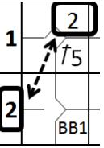

Free arrivals on first base
There are certain specific events or actions that enable the batter to become a runner and therefore entitle him to first base without risk of being put out, provided that he advances and touches first base. These are base on balls, intentional base on balls and hit by pitch.
First, it would be useful to look at some features that are common to all cases:
|
|
| |

|
-
When a batter who has become a runner refuses to exercise his entitlement to first base, or fails to touch the base, he is charged with an automatic putout and a time at bat (Out By Rule 6) [OBR 9.14(c)].
|
-
The total number of free advances to first base awarded to each team is recorded, subdivided into categories, in the appropriate space on the box score balance at the bottom right of each score sheet where, along with At Bats and sacrifices, they are used to calculate the number of plate appearances (PA) for that team.
|